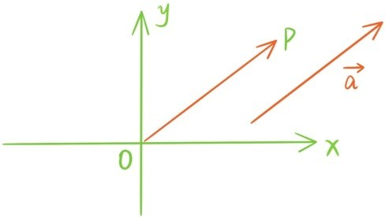
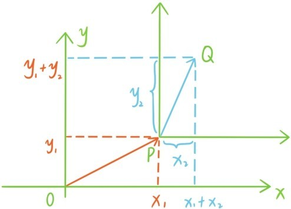
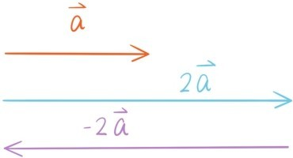
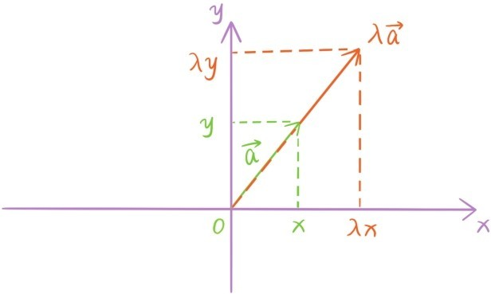

和
和
 ，则
和
平行当且仅当这两条有向线段所在的直线平行或重合。我们约定零向量
与任何向量平行。若两个向量
和
是平行的，则也与
，则
和
平行当且仅当这两条有向线段所在的直线平行或重合。我们约定零向量
与任何向量平行。若两个向量
和
是平行的，则也与
 和
平行。
和
平行。
在平面上给定一个直角坐标系，每个向量 都可以经过平移后，让起点与坐标原点重合，这时向量终点P的坐标(x1,y1)也称为向量的坐标，我们用{x1,y1}表示坐标为(x1,y1)的向量。向量={x1,y1}还可以表示将原点变换为点P的平面平移变换
若是另一个向量，对应的平移变换把点P变换为点Q，

则两个向量的和对应着平移变换的复合
这个复合的平移变换把原点变换为点Q。
所以平面平移变换，平面向量，有序数对和坐标平面上的点之间可以建立起一一对应的关系，其中，两个平面平移变换的复合对应着两个向量的和与有序数对的和，而保持平面不动的平移变换（也是一种平移变换）和零向量对应着(0,0)和坐标原点，向量的反向量是。
根据这种对应关系，向量加法的交换律和结合律无非就是数的加法的交换律和结合律。
一个实数λ和一个向量 的乘积是这样一个向量，它的模是，当λ>0时，与 方向相同，当λ<0时，与 方向相反。我们将实数和向量的这种运算称为数乘运算。根据这个定义，当λ>0时，就是将 放大或缩小λ倍后的向量。当λ<0时，就是的反向量。

由数乘运算可以引出向量平行的概念。若存在一个实数λ使得，我们称两个非零向量
和
是平行的，若用两条有向线段表示
和
，则
和
平行当且仅当这两条有向线段所在的直线平行或重合。我们约定零向量
与任何向量平行。若两个向量
和
是平行的，则也与
和
平行。
从向量坐标的角度来看，如果，则根据平行线分线段成比例定理，。

根据这个事实，下列几个运算规律自动成立，其中λ，μ为任意实数，为任意向量：
（1）；
（2）（数乘结合律）；
（3）（数乘第一分配律）；
（4）（数乘第二分配律）；
关于加法，我们也将最基本的运算规律提炼出来：
（5）；
（6）对于每个向量 ，都存在反向量，使得；
（7）（加法交换律）；
（8）（加法结合律）。
为什么要取提炼这8条基本性质呢？因为数学中有除了向量有加法运算，数乘运算，满足这8条基本性质外，还有大量的数学对象也有加法运算，数乘运算，也满足这8条基本性质，我们把这样的数学对象和结构统称为线性空间。
考虑方程组
它的特征是每个方程等号右边都是0。若(x1,y1,z1)和(x2,y2,z2)都是方程组的解，λ是任意实数，那么(λx1,λy1,λz1)，(x1+x2,y1+y2,z1+z2)也都是这个方程组的解。因此在这个方程组的所有解也有加法运算，数乘运算，也满足这8条基本性质，所以方程组的所有解构成一个线性空间。
类似的，方程3x+y+z=0的所有解，方程2x-y=0的所有解，所有的多项式，所有次数小于一个固定正整数n的多项式，所有以2π为周期的函数，与一个固定向量平行的所有向量，都有加法运算，数乘运算，也都满足这8条基本性质，也都构成一个线性空间。
提问时间
7.3.1 化简与。
7.3.2 在梯形ABCD中，边AB与边CD平行，E与F分别是边BC与边AD的中点，用向量方法证明EF与AB，CD平行，且2EF=AB+CD。（提示：只需证明）
7.3.3 请思考数乘第二分配律与第四章定理6.4之间的关联。